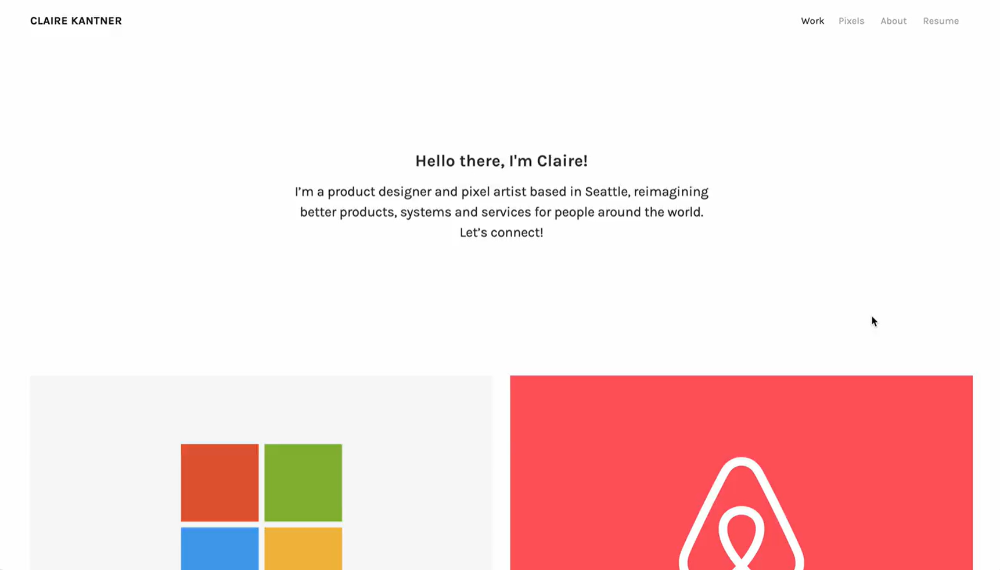

Showcase Yourself with a Professional Portfolio
A well-crafted portfolio is a powerful way to demonstrate your skills, experiences, and accomplishments to potential employers. Whether you're applying for internships, jobs, or graduate programs, a portfolio can set you apart by providing tangible evidence of your capabilities.
Portfolio Resources
- Portfolio for All Pathways
A comprehensive guide to creating a portfolio that effectively showcases your work, tailored to various career pathways. - Portfolio for UX/UI Design Pathway
A specialized checklist for students pursuing UX/UI design, focusing on all relevant components.
Introduction to UX Portfolios
Section 1: What is a portfolio and why do I need one?
A portfolio is a curated collection of your work that showcases your skills, experiences, and accomplishments. It serves as a visual and tangible representation of your abilities, allowing potential employers to see the quality and scope of your work. Platforms include:
You can also create a simple portfolio using Google Sites or a PDF. Choose a format that best showcases your work and is easy to access.
Section 2: What should I include in my portfolio?
Your portfolio should include your best work aligned to your goals. Consider:
- About Me / introduction
- Resume/CV
- Work Samples (with role, tools, outcomes)
- Skills & Competencies
- References
- Contact Info
Section 3: How can I create an effective portfolio?
- Keep it Organized
- Showcase Your Best Work
- Provide Context (project, role, tools, results)
- Make it Visually Appealing
- Update Regularly
- Seek Feedback
Portfolio FAQ
- How long? Aim for 5–10 strong samples.
- One portfolio or many? Tailor per opportunity as needed.
- Personal projects? Yes—relevant ones show passion and initiative.
- Sharing? Link an online site; PDFs work for attachments.
See Portfolios in Action
Explore examples on Cofolio for inspiration:
Straight Forward Portfolio
Stylized Portfolio
Get Your Portfolio Reviewed
At UMSI, students have many opportunities to present portfolios to Career Coaches and alumni.
Alumni Portfolio Review 10.23.24
For coaching, visit UMSI Career Development Coaching.